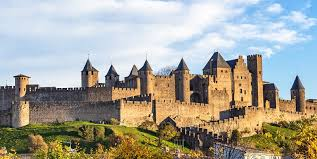

Cité de
Carcassonne


⟹ Patrimoine mondial UNESCO ⟸

Un éperon disputé depuis la Protohistoire. La colline qui porte aujourd'hui la Cité de Carcassonne domine un passage stratégique de la vallée de l'Aude, sur l'axe historique reliant l'Atlantique à la Méditerranée. Un oppidum gaulois, attribué aux Volques Tectosages, y est établi dès le VIe siècle avant notre ère. Le site est conquis par Rome au IIe siècle avant J.-C. et devient la ville romaine de Carcaso, étape sur la Via Aquitania reliant Narbonne à Toulouse. À la fin de l'Antiquité, vers le IIIe-IVe siècle, une première enceinte monumentale est élevée : plusieurs tours et portions de courtines de l'enceinte intérieure conservent aujourd'hui encore leurs maçonneries d'origine gallo-romaine, aisément reconnaissables à leur petit appareil et à leurs assises de briques.
Wisigoths, Francs et Sarrasins : deux siècles de frontière (Ve-VIIIe s.). Au début du Ve siècle, les Wisigoths, installés en Aquitaine, conquièrent le sud de la Gaule. Chassés d'Aquitaine par les Francs en 507, ils conservent Carcassonne, assiégée sans succès par Clovis en 508 : la ville devient alors, pour près de deux siècles, une place frontière au nord de la Septimanie wisigothique. Au VIIIe siècle, l'invasion sarrasine met fin au royaume wisigoth d'Espagne, mais l'occupation arabe de Carcassonne ne dure qu'une trentaine d'années : elle s'achève en 759 lorsque Pépin le Bref reconquiert la Septimanie pour les Francs.
Naissance d'un siège épiscopal et essor urbain (VIe-XIe s.). Un siège épiscopal est établi à Carcassonne dès le VIe siècle, mais la première mention écrite d'une église cathédrale, dédiée aux saints Nazaire et Celse, ne date que de 925. La ville se développe progressivement hors des murs antiques : autour de l'an mil apparaissent une église et un bourg dédiés à saint Michel, signe d'une extension urbaine que confirmera plus tard la fondation de la Bastide.

L'âge d'or des vicomtes Trencavel (XIe-XIIe s.). Aux XIe et XIIe siècles, la puissante famille des vicomtes Trencavel, dont les possessions s'étendent de Carcassonne à Béziers, Albi et au Razès, fait de la Cité l'une de ses principales résidences. Habiles, les Trencavel parviennent longtemps à préserver leur indépendance en composant entre leurs deux puissants voisins, les comtes de Toulouse et de Barcelone. Le château comtal est édifié et renforcé dans la partie occidentale de la Cité ; autour de lui se développe une ville active, protégée par l'ancienne enceinte gallo-romaine et structurée par ses églises, ses maisons et ses ateliers. C'est aussi l'époque où la région s'ouvre à la culture des troubadours et où le catharisme se répand dans le Languedoc, trouvant une protection tacite auprès de la noblesse locale.
1er-15 août 1209 : le siège et la chute de la Cité. Lorsque le pape Innocent III appelle à la croisade contre l'hérésie cathare, le comte de Toulouse et son principal vassal, le vicomte Raimond-Roger Trencavel, en sont les cibles principales. Après la prise et le massacre de Béziers, l'armée croisée met le siège devant Carcassonne le 1er août 1209. Le vicomte, âgé d'environ 24 ans, capitule dès le 15 août en échange de la vie sauve pour les habitants : la ville qui entourait la Cité est détruite et sa population chassée. Raimond-Roger Trencavel meurt de dysenterie dans son propre château le 10 novembre 1209, probablement retenu prisonnier. Ses terres sont données à Simon de Montfort, chef militaire de la croisade, qui devient à son tour vicomte de Carcassonne.
D'Amaury de Montfort à la croisade royale de 1226. À la mort de Simon de Montfort en 1218, lors du siège de Toulouse, son fils Amaury de Montfort hérite de ses possessions mais ne parvient pas à les conserver face à la reconquête méridionale. En 1224, Raimond II Trencavel reprend brièvement la Cité. Amaury cède alors ses droits à Louis VIII, qui lance en 1226 une nouvelle croisade royale : dès cette date, la Cité devient définitivement domaine royal. Une révolte des habitants, en 1240, échoue à son tour ; ses instigateurs sont chassés des faubourgs, qui seront rasés.
Louis IX transforme la Cité en forteresse frontalière. Après 1226, une seconde ligne de fortifications est édifiée à l'extérieur de l'antique enceinte romaine. L'enceinte intérieure est en grande partie démolie et reconstruite, tandis que la nouvelle enceinte extérieure est renforcée et prolongée vers le sud ; les tours nouvellement bâties sont pour la plupart circulaires, à l'exception de deux tours carrées. Sous Louis IX, l'ancien palais des Trencavel est transformé en château fort, résidence du sénéchal royal qui administre la sénéchaussée de Carcassonne — une institution qui perdurera jusqu'au XVIIIe siècle. La ville est définitivement annexée au royaume de France en 1247.
1247-1260 : la Bastide Saint-Louis, une ville nouvelle pour les expulsés. Ayant chassé les habitants de la Cité, Louis IX fait édifier pour eux, sur la rive gauche de l'Aude, une ville neuve fondée en 1247 selon un plan quadrangulaire organisé autour d'une place centrale — l'actuelle place Carnot. Cette Bastide Saint-Louis se développe aux siècles suivants : elle se dote à la Renaissance de nombreux hôtels particuliers construits pour les riches drapiers de la ville, puis d'une enceinte propre bâtie de 1355 à 1359 sur ordre du comte d'Armagnac, longue d'environ 2 800 mètres. Son pavage de marbre rose, extrait des carrières de Caunes-Minervois — la même pierre que celle utilisée à Versailles, à l'Opéra Garnier ou à la Maison-Blanche —, rappelle la visite de Louis XIV. Aux XVIIIe et XIXe siècles, les anciens fossés de la bastide sont remplacés par de larges boulevards.
Une machine de guerre médiévale parmi les mieux conservées d'Europe. Tours, courtines, hourds, archères, portes fortifiées, barbacanes et chemins de ronde forment un système défensif d'une grande sophistication. La porte Narbonnaise, aménagée à la fin du XIIIe siècle, en devient l'entrée monumentale principale ; devant elle se dresse la statue de Dame Carcas, héroïne légendaire à qui la tradition attribue le nom de la ville. Le château comtal, doté de sa propre enceinte, constitue une véritable forteresse dans la forteresse. Au total, la Cité présente aujourd'hui une double ligne de remparts longue d'environ trois kilomètres, comptant 52 tours, quatre barbacanes et quatre portes, protégée par un fossé sec devant l'entrée principale.
Une frontière royale jusqu'au traité des Pyrénées (1258-1659). Après le traité de Corbeil de 1258, qui fixe la frontière avec la couronne d'Aragon, Carcassonne s'intègre au réseau des forteresses royales protégeant le sud du royaume, aux côtés de Peyrepertuse, Quéribus, Termes ou Aguilar. Sa puissance est d'abord dissuasive : elle surveille les routes et symbolise l'autorité capétienne dans une région longtemps disputée. En 1659, le traité des Pyrénées rattache le Roussillon à la France et repousse la frontière vers les Pyrénées : la Cité perd alors l'essentiel de sa fonction militaire, tandis que la Bastide Saint-Louis, de l'autre côté de l'Aude, concentre de plus en plus l'activité économique et urbaine.
XVIIIe-XIXe siècles : déclin et menace de destruction. Privée de rôle militaire, l'ancienne forteresse se dégrade lentement aux XVIIIe et au début du XIXe siècle. Les lices, espace compris entre les deux remparts, sont envahies par des constructions modestes ; des pierres sont récupérées pour d'autres usages. Au XIXe siècle, certaines parties de l'enceinte sont même menacées de démolition pure et simple, l'ensemble étant jugé sans utilité ni valeur par une partie de l'administration locale.
Prosper Mérimée et l'éveil de la conscience patrimoniale. C'est l'intérêt nouveau porté au patrimoine médiéval, conjugué à l'action d'érudits locaux, qui sauve la Cité de la ruine programmée. Prosper Mérimée, inspecteur général des Monuments historiques, joue un rôle déterminant dans cette prise de conscience à partir des années 1840, attirant notamment l'attention sur l'ancienne cathédrale — aujourd'hui basilique — Saint-Nazaire, remarquable par la richesse de son architecture mêlant roman et gothique et par ses vitraux.
Viollet-le-Duc, trente-cinq ans de restauration (1844-1879 et au-delà). À partir de 1844, Eugène Viollet-le-Duc intervient d'abord sur la basilique Saint-Nazaire, puis, à partir des années 1850, sur l'ensemble des fortifications. Après sa mort en 1879, ses collaborateurs et successeurs poursuivent le chantier jusqu'au début du XXe siècle. Tours, courtines, portes et couvertures sont restaurées selon une doctrine visant à restituer la cohérence architecturale d'ensemble du système défensif médiéval, quitte à compléter les parties disparues ou incertaines selon l'idée que l'architecte se faisait du monument. Les toitures coniques en ardoise qui coiffent aujourd'hui plusieurs tours, devenues indissociables de la silhouette de Carcassonne, sont l'une des interventions les plus visibles — et les plus débattues — de ce chantier.
Une restauration devenue elle-même un objet d'histoire. Le chantier carcassonnais reste l'un des exemples les plus célèbres, et les plus controversés, de la restauration monumentale au XIXe siècle. Viollet-le-Duc s'appuie sur une étude archéologique rigoureuse du bâti existant, mais n'hésite pas à compléter les parties manquantes selon sa propre lecture du monument médiéval idéal. Ces choix ont suscité des débats durables sur la frontière entre conservation et restitution, débats qui se poursuivent aujourd'hui parmi historiens et architectes du patrimoine : le chantier de Carcassonne constitue à ce titre l'un des jalons fondateurs de la doctrine moderne de restauration monumentale en Europe.
1997 : l'inscription au patrimoine mondial de l'UNESCO. L'UNESCO inscrit en 1997 la ville fortifiée historique de Carcassonne sur la Liste du patrimoine mondial, au titre des critères (ii) et (iv). La reconnaissance porte à la fois sur l'exceptionnelle conservation d'un système fortifié médiéval développé principalement au XIIIe siècle, comprenant deux enceintes, le château comtal et la basilique Saint-Nazaire, et sur l'importance historique de la campagne de restauration menée par Viollet-le-Duc, considérée comme fondatrice pour la science moderne de la conservation des monuments.
Une ville vivante, pas seulement un décor. La Cité demeure aujourd'hui un quartier habité de Carcassonne, avec ses résidents, ses commerces, ses lieux de culte et ses manifestations culturelles ; elle accueille plus de trois millions de visiteurs chaque année, ce qui en fait l'un des monuments les plus fréquentés de France. Le château comtal et les remparts sont gérés comme monument national par le Centre des monuments nationaux, tandis que la basilique Saint-Nazaire, les rues et les places conservent la mémoire d'une ville façonnée par plus de deux mille cinq cents ans d'occupation continue.
2026 : la Cité rejoint les « Forteresses royales du Languedoc ». Depuis le 26 juillet 2026, le château comtal et les remparts de la Cité intègrent, aux côtés d'Aguilar, Lastours, Montségur, Peyrepertuse, Puilaurens, Quéribus et Termes, le nouveau bien en série des « Forteresses royales du Languedoc », inscrit au patrimoine mondial de l'UNESCO. Cette reconnaissance s'ajoute à l'inscription de 1997 : Carcassonne conserve son statut propre de ville historique fortifiée tout en devenant l'élément phare de ce réseau de sentinelles royales édifiées après la croisade contre les Albigeois, dont elle abritait le sénéchal chargé d'en coordonner la défense.